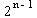
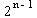

Verovatnoca i statistika
II kolokvijum, 3.5.'95.
.
1. Slucajna velicina X ima  (0,
1) raspodelu. Odrediti gustinu raspodele slucajne velicine
(0,
1) raspodelu. Odrediti gustinu raspodele slucajne velicine i
izracunati E(
i
izracunati E( ).
).
2. Slucajne velicine X i Y su nezavisne i imaju  (1)
raspodelu. Odrediti gustinu raspodele slucajne velicine Y - X.
(1)
raspodelu. Odrediti gustinu raspodele slucajne velicine Y - X.
3. Neka je (Xn) niz nezavisnih slucajnih velicina cije su raspodele odredjene jednakostima:
P {Xn = - }=
P {Xn =
}=
P {Xn =  }=
½, ..... n = 1, 2, ...
}=
½, ..... n = 1, 2, ...
a) Dokazati da je 1/4 = P{Xn = ,
Xn - 1 =}£
P{ (X1 + X2 + ... +
Xn) / n > ½ }, za n ³
2.
,
Xn - 1 =}£
P{ (X1 + X2 + ... +
Xn) / n > ½ }, za n ³
2.
b) Da li za niz (Xn) vazi zakon velikih brojeva?
c) Da li za niz (Xn) vazi jaki zakon velikih brojeva?
4. Centralna granicna teorema za niz nezavisnih slucajnih velicina sa istom raspodelom (formulacija i dokaz).